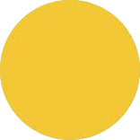

Bromley Mountain TrailMap
| Trail Name | Status |
|---|---|
| {{ row.trail }} | {{ row.status }}
{% if row.status == "open" %}
{% elif row.status == "delayed" %}

{% elif row.status == "closed" %}
{% endif %}
|
...
| Lift Name | Status |
|---|---|
| {{ row.lift }} | {{ row.status }}
{% if row.status == "open" %}
{% elif row.status == "delayed" %}
{% elif row.status == "closed" %}
{% endif %}
|